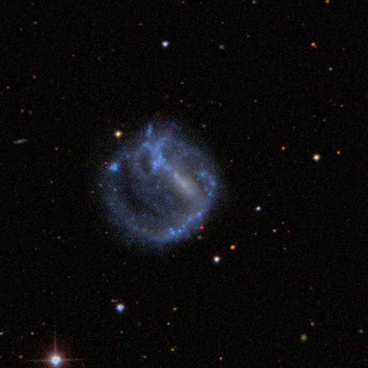
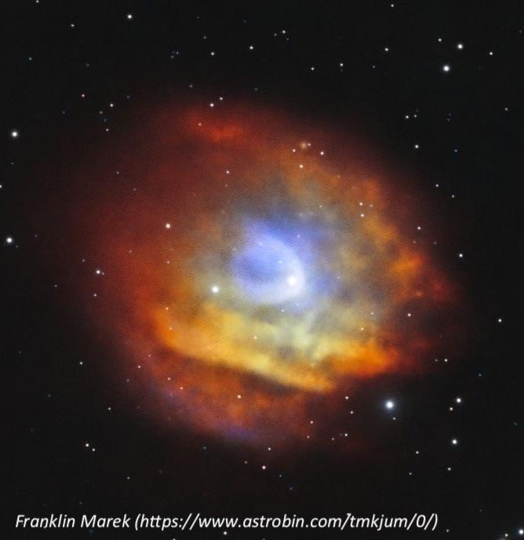

Abell 35, a planetary nebula imposter
- Name: Abell 35
- Aliases: Sh 2-313 = PK 303+40.1 = PN G303.6+40.0
- Type: Emission Nebula
- RA: 12h 53m 32.9s
- Dec: -22° 52' 22"
- Constellation: Hydra
- Diameter: 938" x 636"
- Central star: Companion to mag 9.6 LW Hydrae = BD-22°3467
- Distance: ~ 400 light years
Abell 35 was discovered on the Palomar Sky Survey plates and first listed by George Abell in his 1955 paper (#24) "Globular Clusters and Planetary Nebulae Discovered on the National Geographic Society-Palomar Observatory Sky Survey". A few years later Stewart Sharpless independently discovered it and included it as the last object (#313) in his 1959 "A Catalogue of H II Regions". When Abell produced his final list in 1966, it was renumbered as Abell 35. He considered it a homogeneous disk PN with an angular size between 636" and 938" -- likely a huge, ancient planetary.
Initially, the bright mag 9.6 offset from center was taken as the central star, (a rapidly rotating G8III-IV type) but in 1988 Grewing and Bianchi discovered the true central star was a hot companion and suggested it was a DAO-type white dwarf. Although the G8 star dominates the optical light, the white dwarf dominates the UV flux.
The morphology of the nebula is quite unusual for a planetary with a highly ionized arc of material ("bow shock") around the CS as it moves through the interstellar medium (ISM) at a speed of 125 km/sec. In a 2012 paper by Ziegler et al "BD–22°3467, a DAO-type star exciting the nebula Abell 35", the authors conclude "BD-22° 3467 may not have been massive enough to ascend the asymptotic giant branch and may have evolved directly from the extended horizontal branch to the white dwarf state. This would explain why it is not surrounded by a planetary nebula. However, the star ionizes the ambient interstellar matter mimicking a planetary nebula."

More recently, a 2020 paper by Lobling et al: "First discovery of trans-iron elements in a DAO-type white dwarf (BD-22°3467)" writes that
"The peculiar ionized nebula around BD-22°3467 is not a real PN but, nevertheless, it also cannot be excluded that the nebula material is in some way connected to the evolution of the central star. Assuming that it ejected a PN as an AGB star, the original PN might have already dispersed. The star has a high proper motion and, thus, might now be passing through the edges of the ejected former nebula material or another dense ISM region while ionizing the surrounding material. The classification of Abell 35 as a bow shock nebula in a photoionized Stromgren sphere in the ambient ISM (Frew & Parker 2010) does not necessarily include a PN but also, does not rule out the post-AGB nature of BD-22°3467."
Using 73x in my 18-inch with an OIII filter, Abell 35 appeared as a fairly faint, huge oval WSW-ENE, ~6'x4'. Although the surface brightness is low it was easily visible with the filter and displayed an irregular surface brightness. The unusually bright mag 9.6 star (with the white-dwarf companion) is slightly offset west of center. A second mag 11.5 star is involved on the east side (2.7' following the central star). The planetary is brightest surrounding the central star and just south, with an extension to the east encompassing the mag 11.5 star.

As always,
"Give it a go and let us know!
Good luck and great viewing!"
Steve's follow-up — May 15th, 2024, 04:23 AM
I thought I'd add that the first visual observation I'm aware of was made by Dana Patchick back in April 1982, just using an 8" f/6 reflector in southern California. I assume he was using a UHC or similar filter.
So, don't be hesitant to give it a try with a smaller scope!